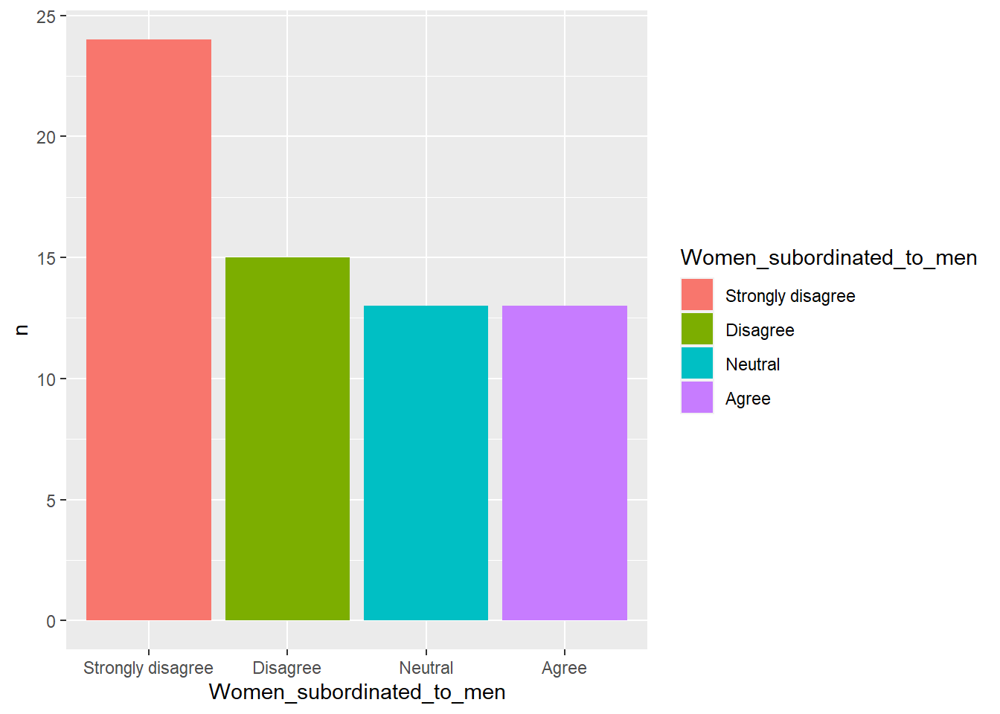
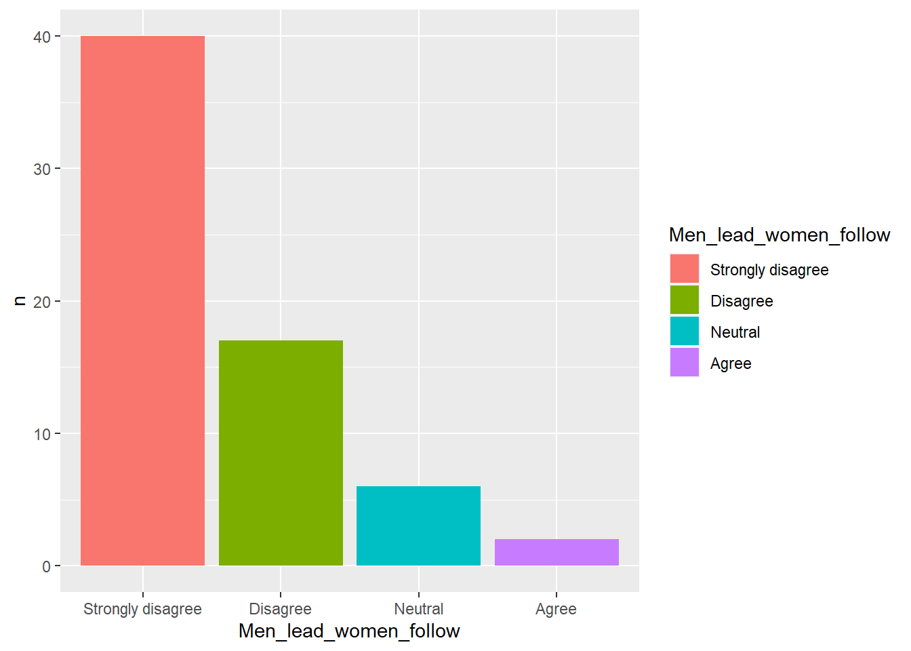
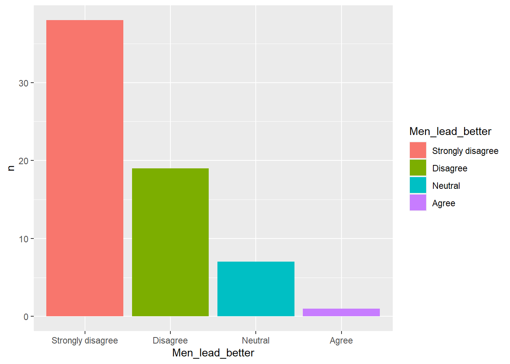
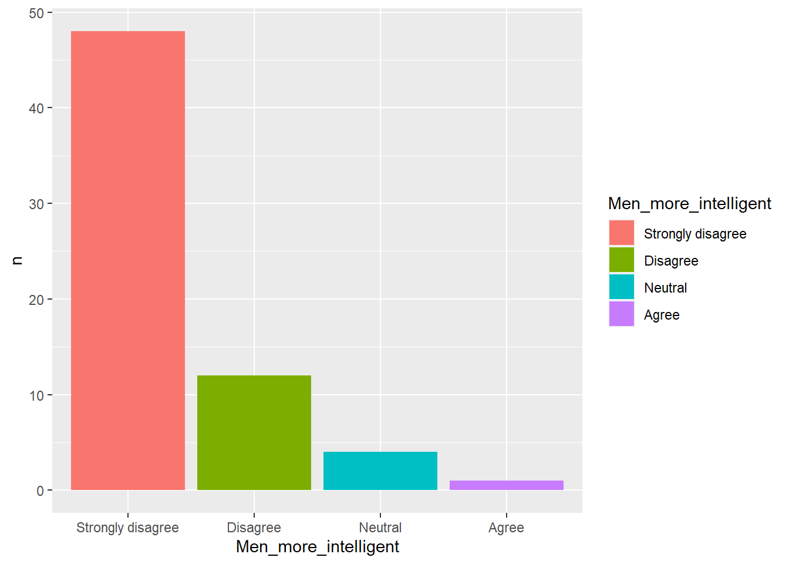
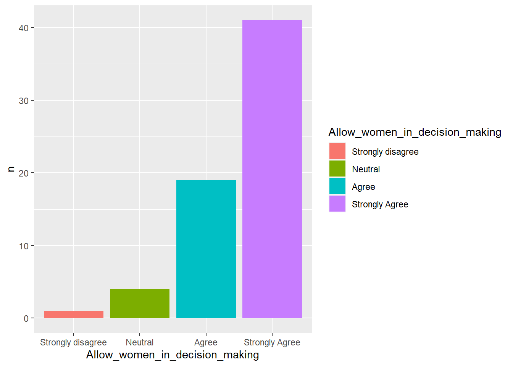
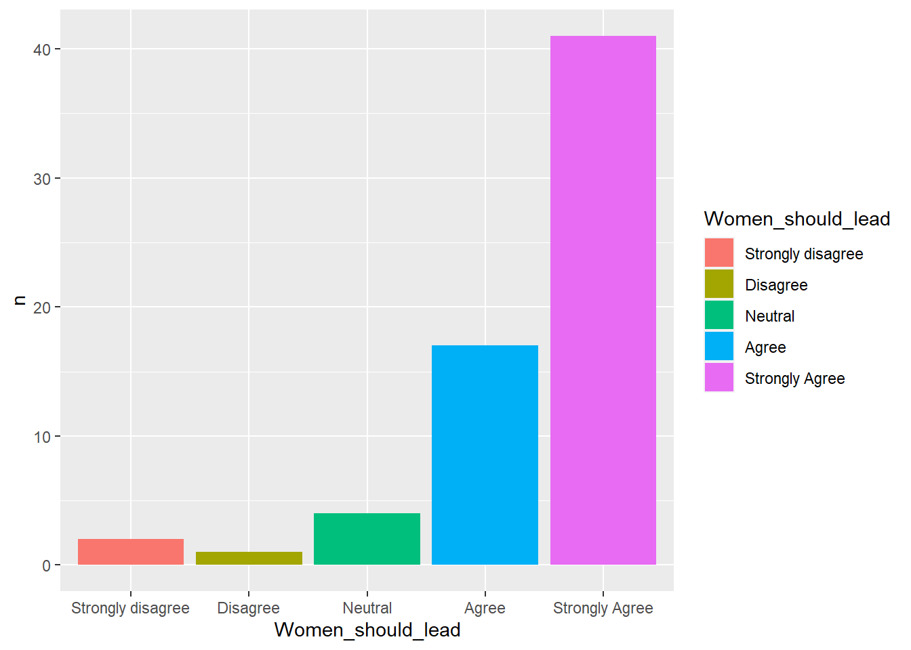
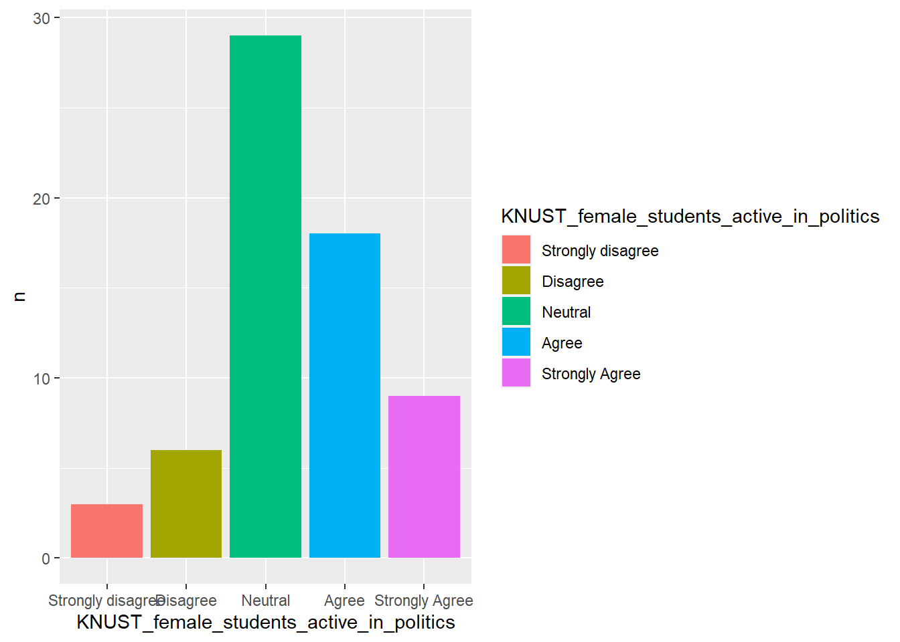
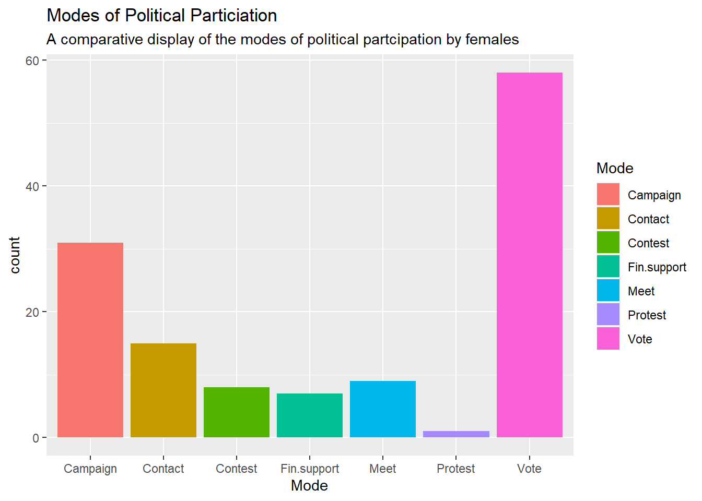
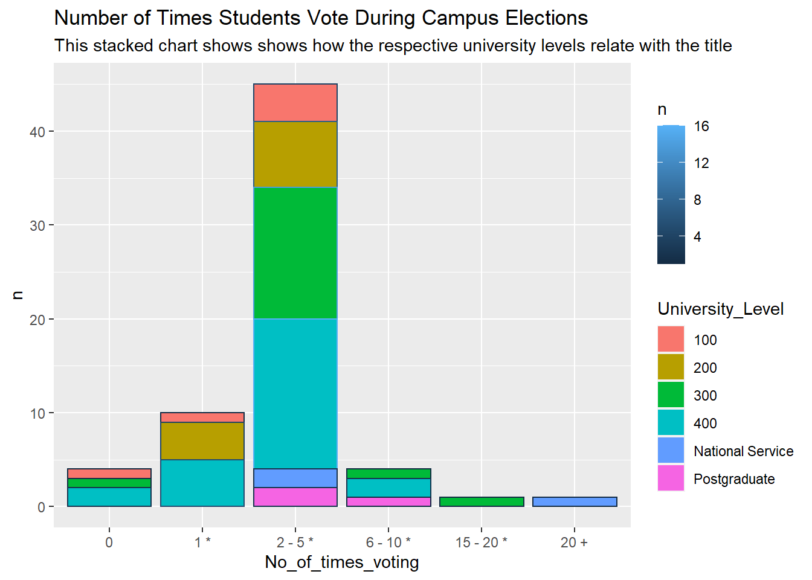

This project is a further analysis of a research data that was originally collected and analysed in 2021 by four KNUST final year political studies student researchers - including me. The data was originally analysed using SPSS. The original research (under the title: IMPACT OF DESCRIPTIVE REPRESENTATION ON FEMALE POLITICAL PARTICIPATION: A CASE STUDY OF KNUST ) sought to:
With the permission of my three other colleague researchers, I undertake this further analysis of the data using R studio. I aim at identifying new insights aside the ones discovered in the original project. Also, I aim at exploring the capabilities of the R programming language in social science data analysis.
The data was originally collected using online Google forms questionnaire. The data was then downloaded in a CSV file format and cleaned using Microsoft Excel. The data was then imported into the R Studio Environment for analysis
The research questions this analysis seeks to answer are:
To identify the trends in how females think about themselves as political beings, I analyse the responses that were given by female respondents indicating their level of agreement(Strongly Disagree, Disagree, Neutral, Agree, Strongly agree) to the following statements;
In addition to the above statements, respondents are asked to indicate their level of agreement with the statement; Females in KNUST participate actively in politics. This is to identify the correlation between how females perceive themselves in politics and how practical they are in politics.
To analyse the responses to the statements above, codes are written to organize the data and then display plots that represent each of the above statements. Below are the series of codes used to analyse the first statement. The remaining five statements will be analysed with similar codes.
Female_Pol %>%
filter(Gender == "Female") %>%
group_by(Women_subordinated_to_men )%>%
count(Women_subordinated_to_men) %>%
arrange(n)
Perception_1a <- Female_Pol %>%
filter(Gender == "Female") %>%
group_by(Women_subordinated_to_men )%>%
count(Women_subordinated_to_men) %>%
arrange(n)
Perception_1a$Women_subordinated_to_men <- factor(Perception_1a$Women_subordinated_to_men, levels = c("Strongly disagree", "Disagree", "Neutral", "Agree", "Strongly agree"))
ggplot(data = Perception_1a)+geom_col(mapping = aes(x= Women_subordinated_to_men, y = n, fill= Women_subordinated_to_men))
## # A tibble: 4 x 2
## # Groups: Women_subordinated_to_men [4]
## Women_subordinated_to_men n
## <chr> <int>
## 1 Agree 13
## 2 Neutral 13
## 3 Disagree 15
## 4 Strongly disagree 24
## # A tibble: 4 x 2
## # Groups: Men_lead_women_follow [4]
## Men_lead_women_follow n
## <chr> <int>
## 1 Agree 2
## 2 Neutral 6
## 3 Disagree 17
## 4 Strongly disagree 40
## # A tibble: 4 x 2
## # Groups: Men_lead_better [4]
## Men_lead_better n
## <chr> <int>
## 1 Agree 1
## 2 Neutral 7
## 3 Disagree 19
## 4 Strongly disagree 38
## # A tibble: 4 x 2
## # Groups: Men_more_intelligent [4]
## Men_more_intelligent n
## <chr> <int>
## 1 Agree 1
## 2 Neutral 4
## 3 Disagree 12
## 4 Strongly disagree 48
## # A tibble: 4 x 2
## # Groups: Allow_women_in_decision_making [4]
## Allow_women_in_decision_making n
## <chr> <int>
## 1 Strongly disagree 1
## 2 Neutral 4
## 3 Agree 19
## 4 Strongly Agree 41
## # A tibble: 5 x 2
## # Groups: Women_should_lead [5]
## Women_should_lead n
## <chr> <int>
## 1 Disagree 1
## 2 Strongly disagree 2
## 3 Neutral 4
## 4 Agree 17
## 5 Strongly Agree 41
## # A tibble: 5 x 2
## # Groups: KNUST_female_students_active_in_politics [5]
## KNUST_female_students_active_in_politics n
## <chr> <int>
## 1 Agree 18
## 2 Disagree 6
## 3 Neutral 29
## 4 Strongly Agree 9
## 5 Strongly disagree 3
Generally, the data depicts females as having a very positive picture about themselves in politics. Most females strongly believe that females should be allowed in decision-making and that females should hold leadership positions. Most females therefore, strongly reject the notions that;
The conflicting argument however, revolves around two issues: (1) the perception of women about their being subordinate to men and (2) females activeness in practical politics. Although majority of females indicate that their strong conviction they are not subordinate to men, quite a number rather perceive themselves(though not with strong conviction) as being subordinates to men. Others also indicate their neutrality in the issue.
It is one thing that only a few female respondents register their disagreement with the assertion that KNUST female students are active in politics. It however is, another thing that many females choose neutrality with this assertion. This suggests that although females are politically active, ‘very’ cannot be easily used to qualify their political engagement.
In general, it could be said of KNUST female students that they do not regard themselves to be far from politics. Females see themselves as political beings.
In order to analyse how females engage in politics on KNUST campus, respondents were asked to indicate their modes of political engagement. From the seven modes of political engagement (listed below) provided, each respondent was to indicate all the modes through which she participated in politics on campus.
To analyse the responses to the statements above, codes are written to organize the data and display plots that represent each of the above modes of political participation. Below are the series of codes used to analyse the second objective of this re-analysis.
Female_Pol %>%
filter(Gender == "Female" & political_engagement_vote == "Yes") %>%
group_by(political_engagement_vote) %>%
count(political_engagement_vote)
Mode <- c("Protest", "Fin.support", "Contest", "Meet", "Contact", "Campaign", "Vote")
count <- c(1, 7, 8, 9, 15, 31, 58)
Politics_Mode <- data_frame(Mode, count)
ggplot(data = Politics_Mode)+
geom_col(mapping = aes(x = Mode, y = count, fill = Mode))
## # A tibble: 1 x 2
## # Groups: political_engagement_vote [1]
## political_engagement_vote n
## <chr> <int>
## 1 Yes 58
## # A tibble: 1 x 2
## # Groups: political_engagement_campaign [1]
## political_engagement_campaign n
## <chr> <int>
## 1 Yes 31
## # A tibble: 1 x 2
## # Groups: political_engagement_contacting_leaders [1]
## political_engagement_contacting_leaders n
## <chr> <int>
## 1 Yes 15
## # A tibble: 1 x 2
## # Groups: political_engagement_financial_support [1]
## political_engagement_financial_support n
## <chr> <int>
## 1 Yes 7
## # A tibble: 1 x 2
## # Groups: political_engagement_attending_political_meetings [1]
## political_engagement_attending_political_meetings n
## <chr> <int>
## 1 Yes 9
## # A tibble: 1 x 2
## # Groups: political_engagement_contest [1]
## political_engagement_contest n
## <chr> <int>
## 1 Yes 8
## # A tibble: 1 x 2
## # Groups: political_engagement_protest [1]
## political_engagement_protest n
## <chr> <int>
## 1 Yes 1

The data reveals that females participate in politics through all the seven modes provided. As portrayed in the plot, females mostly participate in politics through voting. They barely participate in politics through protests.
A review of the plot below reveals that although voting is the mostly used mode of political participation by females, most females vote during a few elections during their stay on campus. Ideally, at level 300, a student must have engaged in more than 10 campus elections. The data, however, shows that most level 300 and 400 students as well as National Service personnel(with more than four years stay on campus) have voted only two to five times.

## # A tibble: 17 x 3
## No_of_times_voting University_Level n
## <fct> <chr> <int>
## 1 0 100 1
## 2 0 300 1
## 3 0 400 2
## 4 1 * 100 1
## 5 1 * 200 4
## 6 1 * 400 5
## 7 15 - 20 * 300 1
## 8 2 - 5 * 100 4
## 9 2 - 5 * 200 7
## 10 2 - 5 * 300 14
## 11 2 - 5 * 400 16
## 12 2 - 5 * National Service 2
## 13 2 - 5 * Postgraduate 2
## 14 20 + National Service 1
## 15 6 - 10 * 300 1
## 16 6 - 10 * 400 2
## 17 6 - 10 * Postgraduate 1The series of codes that generates the table and plot above are similar to the ones used in objective 1.
Amidst the vibrancy of campus politics, the political development of females cannot be overlooked. At the phase where they are been prepared to come out as intellectuals to the benefit of society, females should make conscious efforts to participate actively in politics. That politics is in the domain of men only is an archaic concept. Females in higher educational institutions should be prepared to positively impact the politics of their respective societies.
Through this projects, the R programming language has been demonstrated as a potential tool for data analysis in the field of social science. It’s capabilities offer social science researchers a flexibility in quantitative data analysis.